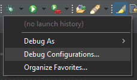
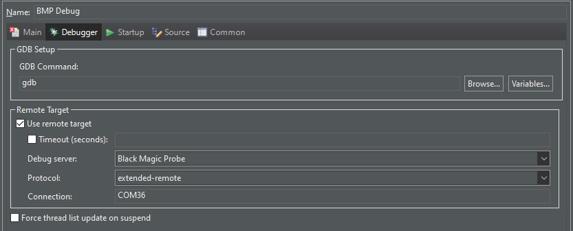

STM32CubeIDE¶
STM32CubeIDE is an Eclipse-based IDE supplied with STM32 microcontrollers by STMicro.
Black Magic Probe support for it is now built-in at the time of writing these lines (v1.16.0).
Debug configuration¶
A GDB debug configuration has to be created in order to debug the target device.
Head to the Debug Configurations menu.

Create a new GDB Hardware Debugging configuration.
In the Debugger tab, select the Black Magic Probe option as the debug server.

If you installed arm-none-eabi-gdb previously, change the default GDB Command to arm-none-eabi-gdb from gdb.
In the Startup tab, enter the following information for the Initialization Commands:
set logging on
set mem inaccessible-by-default off
monitor auto_scan
attach 1
If the target cannot be connected to using the default software reset, the following line can be added before monitor auto_scan:
monitor connect_rst enable
This will enable hardware reset of the core. This cannot be used to debug an already running target.
Optionnally, the target can also be erased before debugging by adding the following line after attach 1:
monitor erase_mass
All the Initialization Commands will be run before the actual debugging.
The configuration should now work to debug the target STM32.
Run configuration¶
STM32CubeIDE doesn’t support hardware GDB run configurations.
In order to support it, duplicate the BMP Debug configuration into BMP Run.
In the Startup tab, enter the following information for the Run Commands:
detach
quit
Running this configuration will start the program on the target, then let it run and quit debugging.
You should now be all set up for debugging and running your code on a STM32 target with STM32CubeIDE and a Black Magic Probe!